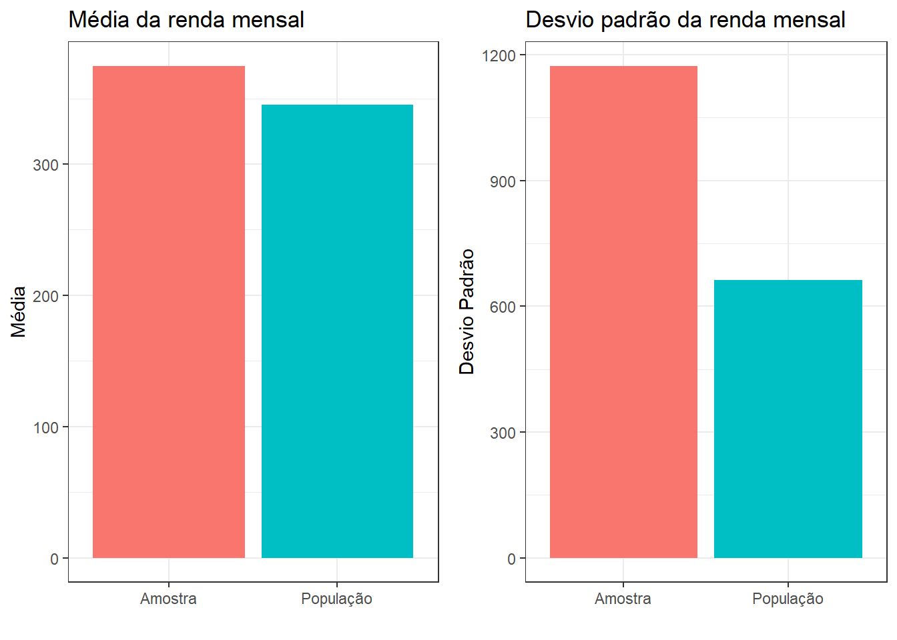
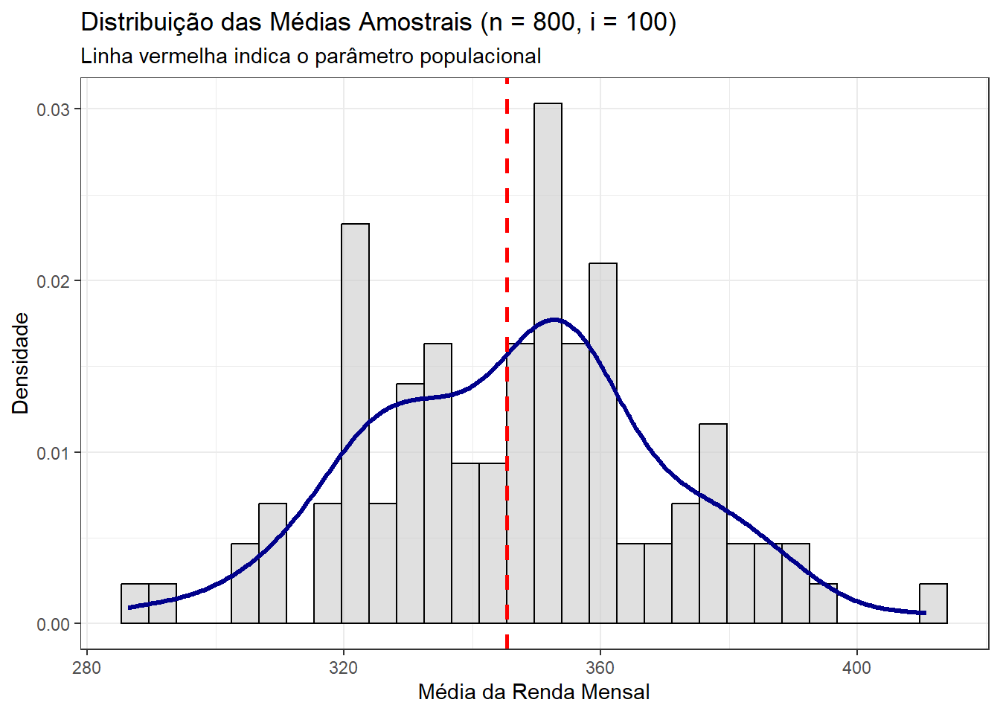
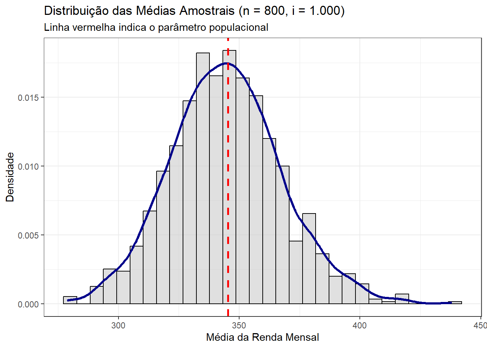
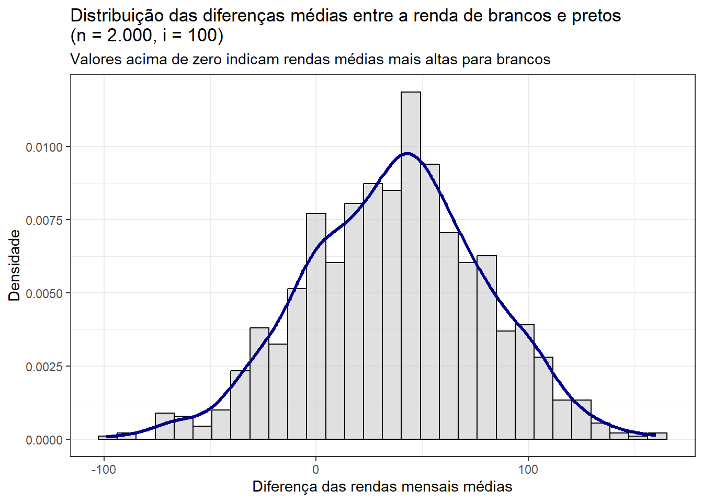
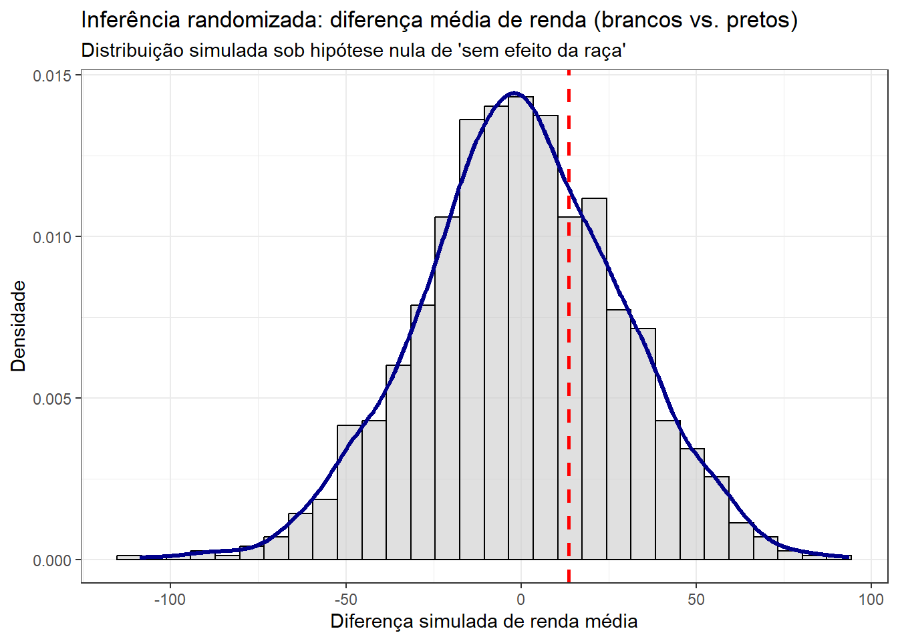
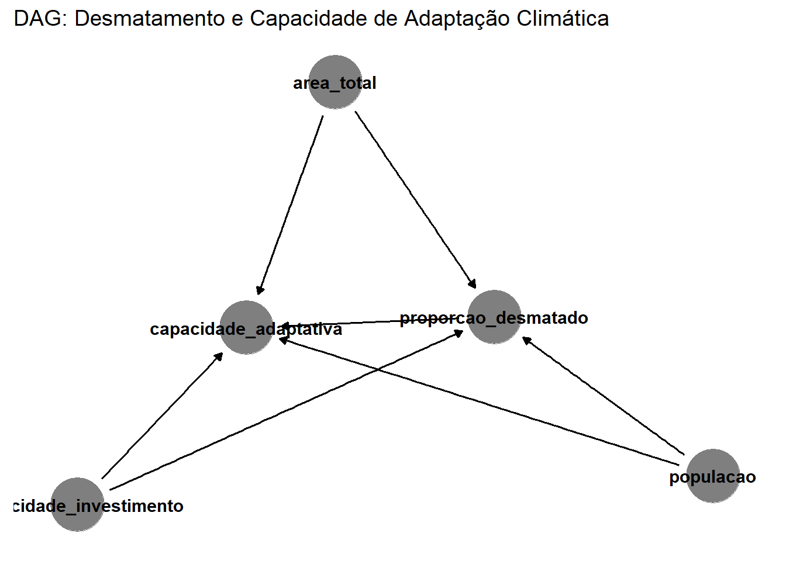
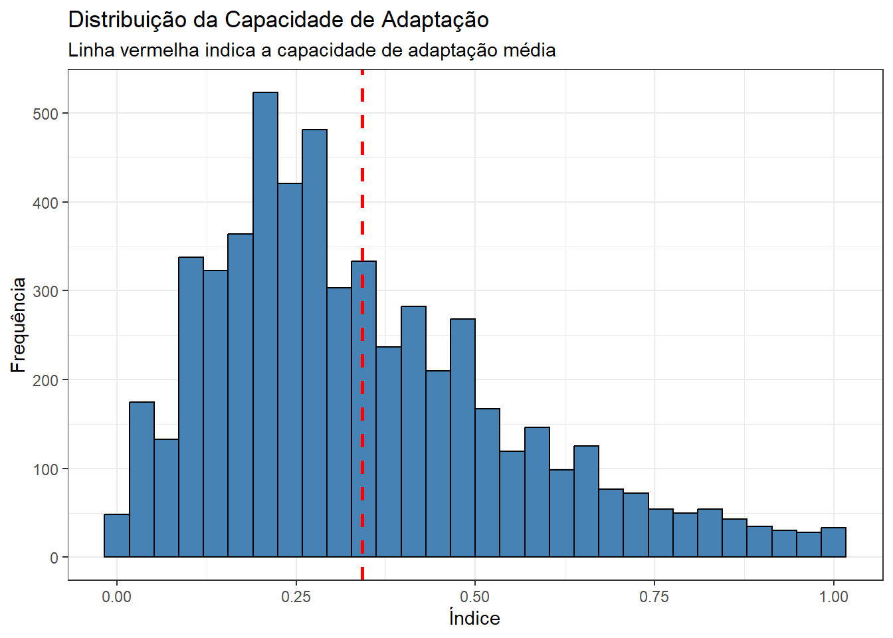
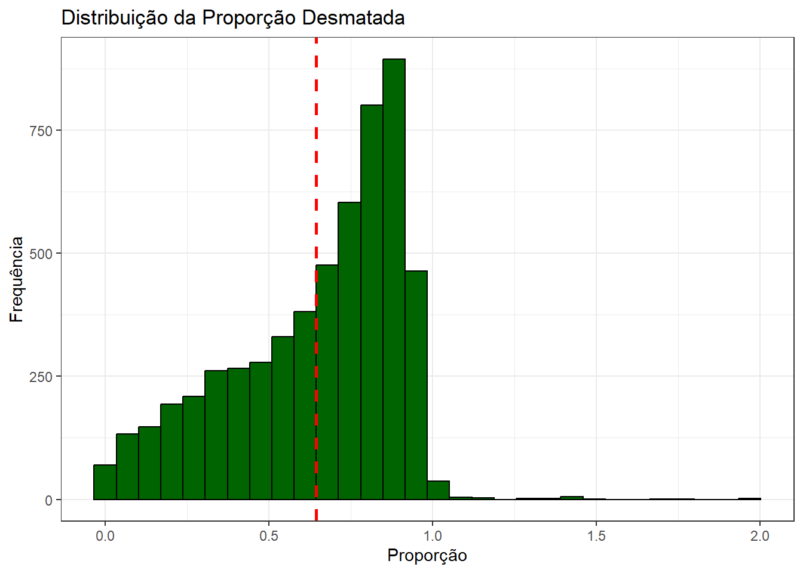
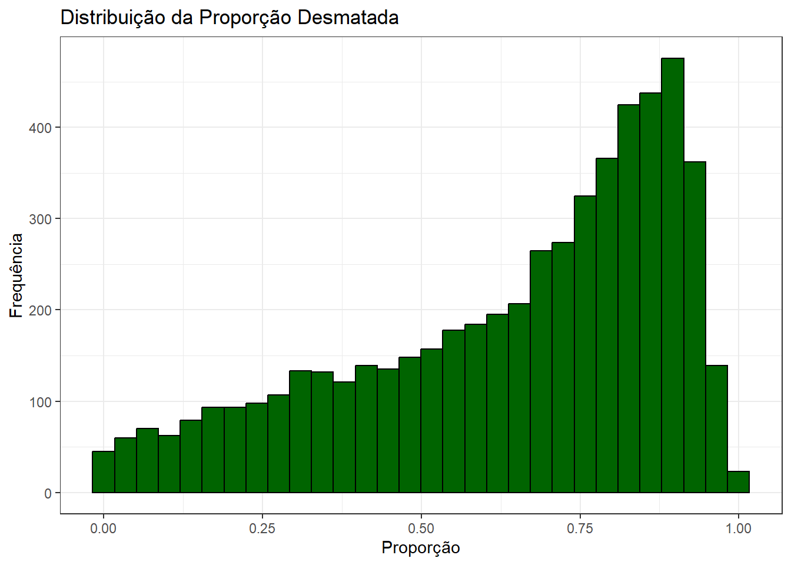
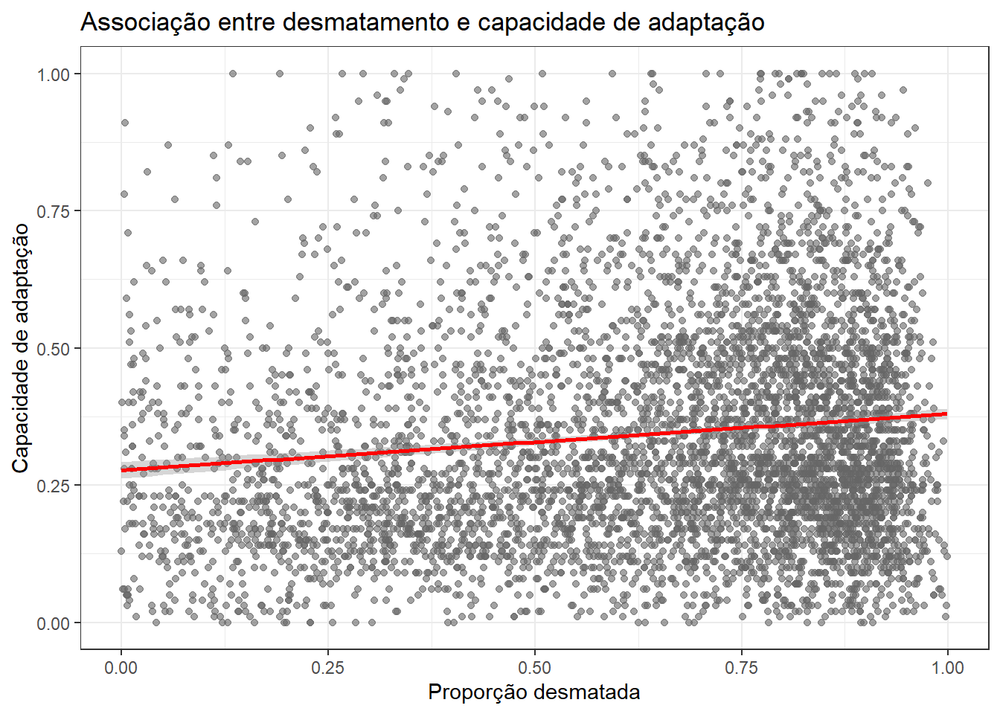

# bibliotecas necessarias
library(tidyverse)
library(gridExtra)
library(gt)
library(ggdag)
library(gtsummary)
# seed
set.seed(42)15 Lista III
Estatística, amostragem e causalidade
Abstract
Nesta lição, exploramos conceitos fundamentais de amostragem, estatística descritiva e inferência causal. Iniciamos com simulações de amostragem aleatória simples, analisando a variabilidade da média e do desvio padrão da renda mensal em Belford Roxo, ilustrando o Teorema Central do Limite. Em seguida, usamos inferência randomizada para avaliar a diferença de renda entre brancos e pretos, simulando a distribuição da diferença sob a hipótese nula. Na segunda parte, construímos um desenho de pesquisa para testar se municípios mais desmatados apresentam menor capacidade adaptativa a desastres, formalizando o modelo com um DAG, descrevendo as variáveis, visualizando associações e ajustando um modelo de regressão com interação, revelando que o impacto do desmatamento sobre a capacidade adaptativa depende do nível de investimento municipal.
Antes de iniciar o exercício, vamos importar as bibliotecas necessárias e definir uma seed – arbitrariamente escolhida – para garantir reprodutibilidade.
16 Parte 1: Amostragem
Nesta primeira parte da lista, o objetivo será gerar e analisar amostras da população de Belford Roxo (RJ). Para tanto, uso uma base de microdados de toda a população do município extraída do Censo Demográfico de 2010. A base está salva no arquivo belford_roxo.Rda e tem 469313 observações (linhas) e 6 variáveis (colunas). São estas:
id: identificador único de cada pessoazona_domicilio: zona de domicílio da pessoa (urbana ou rural)sexo: sexo da pessoa (conforme registrado no Censo)idade: idade da pessoa (em anos)renda_mensal: renda mensal da pessoa (em reais de 2010)cor_raca: cor ou raça da pessoa (conforme registrado no Censo)
16.1 Amostragem aleatória simples
Vamos iniciar extraindo uma amostra aleatória simples, relativamente pequena (\(n = 800\)), da população de Belford Roxo, e sequencialmente calcular a média e o desvio padrão da amostra. Esperamos, é claro, um resultado bastante desviante do parâmetro populacional – afinal, estamos amostrando um número pequeno de indivíduos uma única vez.
# extrai a amostra
sample800 <- belford_roxo %>%
slice_sample(n = 800)
# tira media e desvio padrao da renda mensal na amostra e na populacao
media_amostra800 <- mean(sample800$renda_mensal)
dp_amostra800 <- sd(sample800$renda_mensal)
media_pop <- mean(belford_roxo$renda_mensal)
dp_pop <- sd(belford_roxo$renda_mensal)
# mostra as estatisticas de maneira grafica
## media
grafico_media <- tibble(
Grupo = c("Amostra", "População"),
Valor = c(media_amostra800, media_pop)
) %>%
ggplot(aes(x = Grupo, y = Valor, fill = Grupo)) +
geom_col() +
labs(title = "Média da renda mensal", y = "Média", x = "") +
theme_bw() +
theme(legend.position = "none")
## desvio padrao
grafico_dp <- tibble(
Grupo = c("Amostra", "População"),
Valor = c(dp_amostra800, dp_pop)
) %>%
ggplot(aes(x = Grupo, y = Valor, fill = Grupo)) +
geom_col() +
labs(title = "Desvio padrão da renda mensal", y = "Desvio Padrão", x = "") +
theme_bw() +
theme(legend.position = "none")
# gridExtra mostra os graficos lado a lado
grid.arrange(grafico_media, grafico_dp, ncol = 2)
De fato, observamos que a média obtida superestima a renda mensal da população de Belford Roxo. Embora a diferença não seja tão expressiva, observamos uma medida significativamente distinta no caso do desvio padrão, que é bem maior no caso da amostra. De fato, como a amostra é pequena, é esperado que estejamos amostrando vários indivíduos substantivamente diferentes, superestimando o desvio padrão da renda.
16.2 Tamanho da amostra
Agora, vamos repetir o exercício com amostras um pouco maiores. Podemos esperar que, para tamanhos amostrais maiores, o parâmetro populacional seja melhor estimado – matematicamente, pela Lei dos Grandes Números, esperamos que, à medida que \(n\) cresce,
\[ \dfrac{\sum^n_{i=1} X_i}{n} \approx \mathbb{E}[X], \] sendo \(X_i\) uma observação da variável aleatória \(X\) cuja média desejamos estimar. Nesse caso, \(X\) seria a renda média da população de Belford Roxo. Vejamos:
sample1200 <- belford_roxo %>%
slice_sample(n=1200)
sample2400 <- belford_roxo %>%
slice_sample(n=2400)
# medias
media_amostra1200 <- mean(sample1200$renda_mensal)
media_amostra2400 <- mean(sample2400$renda_mensal)
# desvios padroes
dp_amostra1200 <- sd(sample1200$renda_mensal)
dp_amostra2400 <- sd(sample2400$renda_mensal)
# tabela
tibble(
Renda = c("Média", "Desvio Padrão"),
Amostra_800 = c(media_amostra800, dp_amostra800),
Amostra_1200 = c(media_amostra1200, dp_amostra1200),
Amostra_2400 = c(media_amostra2400, dp_amostra2400),
Base_completa = c(media_pop, dp_pop)
) %>%
gt() %>%
tab_header(title = "Média e desvio padrão da renda por tamanho da amostra") %>%
fmt_number(columns = -Renda, decimals = 1)| Média e desvio padrão da renda por tamanho da amostra | ||||
|---|---|---|---|---|
| Renda | Amostra_800 | Amostra_1200 | Amostra_2400 | Base_completa |
| Média | 374.9 | 356.1 | 352.5 | 345.3 |
| Desvio Padrão | 1,173.7 | 754.2 | 823.6 | 663.0 |
À medida que incrementamos o tamanho da amostra, nos aproximamos mais do parâmetro populacional. Vale notar, ainda, que a diferença mais substantiva é observada entre as amostras de tamanho \(800\) e \(1200\), enquanto um aumento de \(1200\) para \(2400\) apresentou ganhos marginais. Isso se explica por dois motivos: o primeiro, pelo fato de que se trata de apenas uma única amostra aleatória – sujeita, é claro, à incerteza inerente ao processo de amostragem. Além disso, sabemos também que o erro-padrão da média decresce proporcionalmente à raiz quadrada do tamanho amostral. Isso significa dizer que aumentar muito o tamanho da amostra traz ganhos apenas marginalmente melhores em termos de erro-padrão, a menos que o aumento seja suficientemente expressivo.
Vamos explorar isso um pouco mais. Suponha que extraímos uma amostra aleatória de tamanho \(n\) de uma variável aleatória \(X\), \(\{X_1, X_2, \dots, X_n\}\). Sabemos que \(\mathbb{E}[X] = \mu\) e \(\text{Var}(X) = \sigma^2\). Antes de observarmos os dados, cada \(X_i\) é uma variável aleatória que segue a mesma distribuição de \(X\). Essa é uma maneira de pensar na média amostral: como uma média de \(n\) variáveis aleatórias iid. Cada ponto observado \(\{ x_1, x_2, \dots, x_n \}\) é uma realização dessas variáveis aleatórias.
When you observe a random sample (these are fixed numbers once they are observed) and find its average, you are effectively taking a realization from the sample mean random variable (make sense?) [link].
A variância amostral é, portanto,
\[ \text{Var}(X_1 + X_2 + \dots + X_n) = \text{Var} \left( \sum^n_{i = 1} X_i \right) = n \cdot \sigma^2, \] e a a média amostral é \(\bar{X} = \frac{1}{n} \sum^n_{i=1} X_i\). Pelas propriedades da variância, portanto, a variância amostral da média amostral será:
\[ \text{Var}\left( \dfrac{1}{n} \sum^n_{i=1} X_i \right) = \dfrac{1}{n^2} \ \text{Var} \left( \sum^n_{i=1} X_i \right) = \dfrac{n \cdot \sigma^2}{n^2} = \dfrac{\sigma^2}{n}. \]
Daí segue que o erro-padrão da média amostral é \(\dfrac{\sigma}{\sqrt{n}}\), decrescendo a uma proporção de \(\sqrt{n}\).
16.3 Distribuição amostral da média
Neste ponto, vamos simular uma distribuição amostral da média da renda mensal da população de Belford Roxo. Nosso objetivo é extrair \(i\) amostras aleatórias de tamanho \(n=800\). O que estamos fazendo, afinal, é testando o Teorema Central do Limite. Esse teorema afirma que, sob certas condições, a distribuição da média de um grande número de variáveis aleatórias i.i.d. tende a uma distribuição normal. Formalmente, à medida que extraímos mais amostras, esperamos que:
\[ \dfrac{\bar{X} - \mathbb{E}[X]}{\sqrt{{\text{Var}(X) / i}}} \sim \mathcal{N}(0, 1), \]
sendo \(i\) o número de amostras, embora essa não seja a notação comum (durante o trabalho, a variável \(n\) já está ocupada representando o tamanho da amostra). Em outras palavras, esperamos que a média amostral padronizada siga uma distribuição aproximadamente normal com média \(0\) e variância \(1\).
Na prática, padronizar a distribuição para aproximá-la de uma \(\mathcal{N}(0, 1)\) é muito útil, mas essa padronização não é necessária para observarmos o fato de que a distribuição da média amostral se aproximará de uma distribuição normal de todo modo – embora, é claro, centrada em outro ponto que não o \(0\). No nosso caso, em particular, esperamos que essa distribuição centrada em torno do parâmetro populacional, cujo valor é conhecido.
Vejamos:
# distribuicao da media amostral
distribuicao_media_amostral <- numeric(100)
for (i in 1:100) {
sample <- belford_roxo %>%
slice_sample(n = 800)
distribuicao_media_amostral[i] <- mean(sample$renda_mensal)
}
# converte para dataframe
df_medias <- tibble(media = distribuicao_media_amostral)
# histograma da distribuicao da media amostral
ggplot(df_medias, aes(x = media)) +
geom_histogram(aes(y = ..density..), fill = "grey80", color = "black", alpha = 0.6) +
geom_density(color = "darkblue", size = 1.2) +
geom_vline(xintercept = media_pop, color = "red", linetype = "dashed", size = 1) +
labs(
title = "Distribuição das Médias Amostrais (n = 800, i = 100)",
subtitle = "Linha vermelha indica o parâmetro populacional",
x = "Média da Renda Mensal",
y = "Densidade"
) +
theme_bw()
Estamos razoavelmente próximos do parâmetro populacional e estamos começando a nos aproximar de uma distribuição normal. Observamos que há mais massa de probabilidade no entorno do parâmetro populacional, mas ainda com alto grau de incerteza, refletida, por exemplo, nas caudas pesadas à esquerda e à direita. Pelo TCL, sabemos que é útil aumentar o número \(i\) de amostras, então vamos testar \(i = 1000\):
# distribuicao da media amostral
distribuicao_media_amostral <- numeric(1000)
for (i in 1:1000) {
sample <- belford_roxo %>%
slice_sample(n = 800)
distribuicao_media_amostral[i] <- mean(sample$renda_mensal)
}
# converte para dataframe
df_medias <- tibble(media = distribuicao_media_amostral)
# histograma da distribuicao da media amostral
ggplot(df_medias, aes(x = media)) +
geom_histogram(aes(y = ..density..), fill = "grey80", color = "black", alpha = 0.6) +
geom_density(color = "darkblue", size = 1.2) +
geom_vline(xintercept = media_pop, color = "red", linetype = "dashed", size = 1) +
labs(
title = "Distribuição das Médias Amostrais (n = 800, i = 1.000)",
subtitle = "Linha vermelha indica o parâmetro populacional",
x = "Média da Renda Mensal",
y = "Densidade"
) +
theme_bw()
Agora, sim, temos um resultado bem mais próximo de uma distribuição normal. O resultado é qualitativamente melhor, já que a distribuição obtida põe altíssima massa de probabilidade no entorno do parâmetro populacional.
16.4 Comparação de renda entre brancos e pretos
Agora, façamos uma análise um pouco mais específica.Quero avaliar se há diferença substantiva entre a renda mensal de brancos e pretos na população de Belford Roxo. Vamos tirar uma amostra aleatória com \(n = 2000\) e avaliar a diferença da renda média entre os dois grupos:
# amostra
amostra_br <- belford_roxo %>%
slice_sample(n = 2000)
# media por grupo, filtrando cor_raca
tabela_comparativa <- amostra_br %>%
filter(cor_raca %in% c("Branca", "Preta")) %>%
group_by(cor_raca) %>%
summarise(
renda_media = mean(renda_mensal, na.rm = TRUE),
n = n(),
.groups = "drop"
)
# tabela formatada
tabela_comparativa %>%
gt() %>%
tab_header(
title = "Renda média por cor_raca em amostra de 2.000 indivíduos"
) %>%
cols_label(
cor_raca = "Cor/raça",
renda_media = "Renda média",
n = "N"
) %>%
fmt_number(columns = renda_media, decimals = 1)| Renda média por cor_raca em amostra de 2.000 indivíduos | ||
|---|---|---|
| Cor/raça | Renda média | N |
| Branca | 364.9 | 631 |
| Preta | 351.8 | 286 |
Pela amostra extraída, parece que há diferenças, com alguma vantagem para a população branca. Não podemos, no entanto, afirmar que isso ocorre sistematicamente – afinal, estamos lidando com apenas uma amostra. Para fazer uma afirmação mais contundente, podemos utilizar estratégias inferenciais como a inferência randomizada. Faço isso na seção a seguir.
16.5 Inferência randomizada
A inferência randomizada é uma estratégia útil em desenhos experimentais porque ela permite criar um cenário contrafactual e gerar uma distribuição sub a hipótese nula.
Randomization inference considers what would have occured under not only the random assignment that happened to be selected for the experiment, but rather under all possible random assignments: would the results hold? (The World Bank [link])
Nesse caso, está claro, não estamos tratando de um experimento, mas a inferência randomizada permanece útil: quando desejamos explorar potenciais diferenças na renda mensal de brancos e pretos, não conseguimos definir o grupo controle e o grupo de tratamento – isto é, não temos nenhum tipo de controle sobre a cor/raça dos indivíduos da população.
A inferência randomizada permite simular o que aconteceria se a designação racial fosse aleatória, embaralhando as etiquetas de raça entre os indivíduos. Ao fazer isso repetidamente, podemos construir uma distribuição da diferença de rendas esperada sob a hipótese de que raça não tem efeito sobre renda. Comparando a diferença observada com essa distribuição simulada, conseguimos avaliar se o valor que encontramos nos dados é plausivelmente explicado pelo acaso ou se sugere uma associação real entre raça e renda.
Vamos, primeiro, avaliar a variabilidade da diferença de médias extraindo várias amostras:
diferenca_renda <- numeric()
for (i in 1:1000){
amostra_br <- belford_roxo %>%
slice_sample(n=2000)
tabela_comparativa <- amostra_br %>%
filter(cor_raca %in% c("Branca", "Preta")) %>%
group_by(cor_raca) %>%
summarise(
renda_media = mean(renda_mensal),
n = n()
)
renda_media_brancos <- tabela_comparativa$renda_media[tabela_comparativa$cor_raca == "Branca"]
renda_media_pretos <- tabela_comparativa$renda_media[tabela_comparativa$cor_raca == "Preta"]
dif <- renda_media_brancos - renda_media_pretos
diferenca_renda[i] <- dif
}
df_diferencas <- tibble(diferenca = diferenca_renda)
ggplot(df_diferencas, aes(x = diferenca)) +
geom_histogram(aes(y = ..density..), fill = "grey80", color = "black", alpha = 0.6) +
geom_density(color = "darkblue", size = 1.2) +
labs(
title = "Distribuição das diferenças médias entre a renda de brancos e pretos \n(n = 2.000, i = 100)",
subtitle = "Valores acima de zero indicam rendas médias mais altas para brancos",
x = "Diferença das rendas mensais médias",
y = "Densidade"
) +
theme_bw()
De fato, parece haver uma diferença sistemática na renda média de brancos e pretos. Observe que a distribuição simulada põe alta massa de probabilidade em valores acima do zero, indicando que pessoas brancas, em média, têm renda mais alta que pessoas pretas. De maneira consistente nas amostras, há uma associação estatisticamente positiva entre ser branco e ter renda mais alta.
Isso ainda não nos permite fazer afirmações causais. Em particular, existem possíveis variáveis de confusão que não estão sendo incorporadas na análise (como escolaridade, ocupação etc), e, além disso, a atribuição racial não é verdadeiramente aleatória. Podemos usar inferência randomizada para testar significância estatística sob a hipótese nula. Para isso:
- Extraímos uma amostra aleatória da população de Belford Roxo
- Embaralhamos cor/raça na amostr \(i\) vezes, extraindo a diferença de médias em cada execução
Intuitivamente, quando aleatorizamos a atribuição da cor/raça, estamos assumindo que não existe qualquer diferença associada a essa variável na renda. Com isso, geramos uma distribuição da diferença de médias sob a hipótese nula. Vejamos:
amostra_br <- belford_roxo %>%
filter(cor_raca %in% c("Branca", "Preta")) %>%
slice_sample(n = 2000)
# Diferença real observada
tabela_real <- amostra_br %>%
group_by(cor_raca) %>%
summarise(renda_media = mean(renda_mensal), .groups = "drop")
dif_observada <- tabela_real$renda_media[tabela_real$cor_raca == "Branca"] -
tabela_real$renda_media[tabela_real$cor_raca == "Preta"]
# Inferência randomizada
dif_simulada <- numeric(1000)
for (i in 1:1000) {
cor_embaralhada <- sample(amostra_br$cor_raca) # embaralha rótulos
dados_embaralhados <- amostra_br %>%
mutate(cor_raca_random = cor_embaralhada) %>%
group_by(cor_raca_random) %>%
summarise(renda_media = mean(renda_mensal), .groups = "drop")
renda_br <- dados_embaralhados$renda_media[dados_embaralhados$cor_raca_random == "Branca"]
renda_pr <- dados_embaralhados$renda_media[dados_embaralhados$cor_raca_random == "Preta"]
dif_simulada[i] <- renda_br - renda_pr
}
# Criar tibble com as diferenças simuladas
df_diferencas <- tibble(diferenca = dif_simulada)
# Plot
ggplot(df_diferencas, aes(x = diferenca)) +
geom_histogram(aes(y = ..density..), fill = "grey80", color = "black", bins = 30, alpha = 0.6) +
geom_density(color = "darkblue", size = 1.2) +
geom_vline(xintercept = dif_observada, color = "red", linetype = "dashed", size = 1) +
labs(
title = "Inferência randomizada: diferença média de renda (brancos vs. pretos)",
subtitle = "Distribuição simulada sob hipótese nula de 'sem efeito da raça'",
x = "Diferença simulada de renda média",
y = "Densidade"
) +
theme_bw()
# existe de fato vantagem para brancos?
p_valor_unilateral <- mean(dif_simulada >= dif_observada)
print(glue::glue("p-valor empírico: {round(p_valor_unilateral, 2)}"))p-valor empírico: 0.31Gerando uma distribuição sob a hipótese nula de que a raça não tem efeito sobre a renda, obtivemos um p-valor relativamente alto. Isso indica que a diferença observada na amostra pode ter ocorrido por acaso, e portanto não há evidência estatística suficiente, neste teste, para afirmar que a raça influencia a renda.
Isso não significa, é claro, que não haja desigualdade associada à raça — apenas que, com os dados e o método utilizados, não foi possível atribuir estatisticamente essa diferença à raça de forma isolada.
17 Parte 2: Causalidade e desenho de pesquisa
Na segunda parte da lista, vamos trabalhar com conceitos de desenho de pesquisa, descrição e inferência causal. Ou seja, vamos deixar de lado inferência e probabilidade e olhar para outros aspectos da pesquisa social quantitativa.
Para isso, trabalharei com o banco de dados base_municipios_brasileiros.RDa. Trata-se de um dos mais completos bancos de dados sobre informações dos municípios brasileiros, cobrindo escopo temporal de 30 anos, 17 dimensões, 31 pesquisas e 451 variáveis; ele foi criado pelo MAPE, o Laboratório de Monitoramento e Avaliação de Políticas e Eleições do IESP-UERJ.
17.1 Desenho de pesquisa
Queremos explorar o seguinte:
- Pergunta de pesquisa: Municípios mais desmatados apresentam menor capacidade de adaptação a desastres?
- Variável dependente: Índice de capacidade adaptativa para inundações, enxurradas e alagamentos
- Variável independente: Proporção do total desmatado do município (divisão entre o total desmatado e a área total)
- Hipótese principal: Quanto maior a proporção de área desmatada, menor a capacidade adaptativa do município a inundações
Abaixo, filtramos a base para manter apenas as colunas desejadas. Além disso, analisaremos os dados do ano de 2020 – apenas pelo fato de que, felizmente, nele não há nenhuma informação nula. Análises futuras deverão, é claro, analisar a relação em outros anos.
load("data/base_municipios_brasileiros.Rda")
base_municipios_brasileiros <- base_municipios_brasileiros %>%
select(
id_municipio,
ano,
indice_capacidade_adaptacao_inundacoes_enxurradas,
proporcao_desmatado,
populacao,
area_total_municipio,
capacidade_investimento_adaptacao
) %>%
filter(ano == 2020)
colSums(is.na(base_municipios_brasileiros)) / nrow(base_municipios_brasileiros) id_municipio
0
ano
0
indice_capacidade_adaptacao_inundacoes_enxurradas
0
proporcao_desmatado
0
populacao
0
area_total_municipio
0
capacidade_investimento_adaptacao
0 17.2 Formalização
A partir do pacote ggdag, vamos formalizar a relação entre a variável dependente e a independente, considerando possíveis variáveis que confundam a relação entre ambas, e/ou que precisam ser incluídas como controles.
dag <- dagify(
capacidade_adaptativa ~ proporcao_desmatado + capacidade_investimento + populacao + area_total,
proporcao_desmatado ~ populacao + area_total + capacidade_investimento,
labels = c(
capacidade_adaptativa = "Capacidade de adaptação",
proporcao_desmatado = "Proporção desmatada",
populacao = "População",
area_total = "Área total do município",
capacidade_investimento = "Capacidade de investimento"
)
)
dag %>%
tidy_dagitty() %>%
ggdag_status() +
geom_dag_edges() +
geom_dag_point() +
geom_dag_text(color = "black", size = 4) +
labs(title = "DAG: Desmatamento e Capacidade de Adaptação Climática") +
theme_dag()
O DAG construído representa a hipótese de que a proporção de área desmatada em um município afeta negativamente sua capacidade de adaptação a inundações e enxurradas. Para isolar esse efeito, é necessário controlar por variáveis que influenciam tanto o desmatamento quanto a capacidade adaptativa: a população municipal (que afeta pressão sobre o uso do solo e disponibilidade de recursos), a área total do município (que determina o espaço passível de desmatamento e desafios de gestão), e a capacidade de investimento público.
17.3 Descrição
Agora, trabalhamos com uma análise descritiva das variáveis de interesse. Em particular, veremos a distribuição das variáveis \(X\) e \(Y\) e a relação entre elas.
ggplot(base_municipios_brasileiros, aes(x = indice_capacidade_adaptacao_inundacoes_enxurradas)) +
geom_histogram(fill = "steelblue", color = "black", bins = 30) +
geom_vline(xintercept = mean(base_municipios_brasileiros$indice_capacidade_adaptacao_inundacoes_enxurradas), color = "red", linetype = "dashed", size = 1) +
labs(
title = "Distribuição da Capacidade de Adaptação",
subtitle = "Linha vermelha indica a capacidade de adaptação média",
x = "Índice",
y = "Frequência") +
theme_bw()
Em média, a capacidade de adaptação dos municípios é baixa, pouco mais de 30%. Além disso, como veremos abaixo, a proporção de desmatamento, por outro lado, é alta em média, acima de 50%. Além disso, em termos de distribuição, há grande concentração na faixa dos 70%-80%.
Note, além disso, que há algum erro nos valores da variável de proporção de área desmatada. Tratando-se de uma proporção em relação à área, não deveríamos ser capazes de observar valores acima de 1. Como não sabemos exatamente a origem desse erro, removeremos os casos da base para as análises subsequentes.
ggplot(base_municipios_brasileiros, aes(x = proporcao_desmatado)) +
geom_histogram(fill = "darkgreen", color = "black", bins = 30) +
geom_vline(xintercept = mean(base_municipios_brasileiros$proporcao_desmatado), color = "red", linetype = "dashed", size = 1) +
labs(title = "Distribuição da Proporção Desmatada", x = "Proporção", y = "Frequência") +
theme_bw()
base_municipios_brasileiros <- base_municipios_brasileiros %>%
filter(proporcao_desmatado <= 1)
base_municipios_brasileiros %>%
ggplot(aes(x = proporcao_desmatado)) +
geom_histogram(fill = "darkgreen", color = "black", bins = 30) +
labs(title = "Distribuição da Proporção Desmatada", x = "Proporção", y = "Frequência") +
theme_bw()
Abaixo, observamos a relação entre as variáveis. Na prática, parece que as variáveis são fracamente associadas; no entanto, já mostra um primeiro indício de que a hipótese inicial não se verifica na prática: à medida que a proporção desmatada aumenta, há um leve aumento na capacidade adaptativa média. No entanto, a alta dispersão dos pontos sugere que essa relação é bastante heterogênea e que o desmatamento, por si só, não explica bem as variações na capacidade de adaptação.
base_municipios_brasileiros %>%
ggplot(aes(x = proporcao_desmatado, y = indice_capacidade_adaptacao_inundacoes_enxurradas)) +
geom_point(alpha = 0.6, color = "grey40") +
geom_smooth(method = "lm", color = "red", se = TRUE) +
labs(
title = "Associação entre desmatamento e capacidade de adaptação",
x = "Proporção desmatada",
y = "Capacidade de adaptação"
) +
theme_bw()
17.4 Teste
Ajustemos, finalmente, um modelo de regressão linear multivariado que associa o índice de capacidade de adaptação à proporção de área desmatada, controlando para potenciais confundidores.
modelo <- lm(
indice_capacidade_adaptacao_inundacoes_enxurradas ~
proporcao_desmatado +
populacao +
area_total_municipio +
capacidade_investimento_adaptacao,
data = base_municipios_brasileiros
)
tbl_regression(modelo, intercept = TRUE) %>%
add_significance_stars()| Characteristic | Beta1 | SE |
|---|---|---|
| (Intercept) | -0.10*** | 0.008 |
| proporcao_desmatado | 0.03*** | 0.008 |
| populacao | 0.00*** | 0.000 |
| area_total_municipio | 0.00 | 0.000 |
| capacidade_investimento_adaptacao | 1.4*** | 0.020 |
| Abbreviations: CI = Confidence Interval, SE = Standard Error | ||
| 1 *p<0.05; **p<0.01; ***p<0.001 | ||
Foquemos na interpretação de \(\beta_1\): para cada ponto percentual a mais de área desmatada, há um aumento médio de \(\approx 0.03\) no índice de capacidade adaptativa, mantidas as demais variáveis constantes. Isso contradiz a hipótese inicial de que mais desmatamento reduziria a capacidade institucional de adaptação. O fator com maior impacto positivo no índice adaptativo, como esperado, é a capacidade de investimento público.
Faz sentido explorar a relação entre a capacidade de investimento e o desmatamento. Isso avaliar investigar, mais especificamente, se o efeito do desmatamento sobre a capacidade de adaptação depende da capacidade de investimento do município.
modelo <- lm(
indice_capacidade_adaptacao_inundacoes_enxurradas ~
proporcao_desmatado +
populacao +
area_total_municipio +
capacidade_investimento_adaptacao +
proporcao_desmatado:capacidade_investimento_adaptacao,
data = base_municipios_brasileiros
)
tbl_regression(modelo, intercept = TRUE) %>%
add_significance_stars()| Characteristic | Beta1 | SE |
|---|---|---|
| (Intercept) | -0.13*** | 0.016 |
| proporcao_desmatado | 0.07** | 0.024 |
| populacao | 0.00*** | 0.000 |
| area_total_municipio | 0.00 | 0.000 |
| capacidade_investimento_adaptacao | 1.5*** | 0.055 |
| proporcao_desmatado * capacidade_investimento_adaptacao | -0.15 | 0.079 |
| Abbreviations: CI = Confidence Interval, SE = Standard Error | ||
| 1 *p<0.05; **p<0.01; ***p<0.001 | ||
Observamos que, para cada unidade que aumentamos na capacidade de investimento, o efeito positivo do desmatamento diminui. Em particular, em municípios com baixa capacidade de investimento, o desmatamento pode estar associado a alguma forma de ganho adaptativo (por exemplo, por ser a uma das principais atividades econômicas do município); por outro lado, em municípios com maior capacidade de investimento, o desmatamento tende a estar associado a uma redução da capacidade adaptativa. Vale notar que, apesar de a tabela mascarar o p-valor do termo interativo, esse p-valor é de \(0.0503\) e, portanto, o considero estatisticamente significativo.